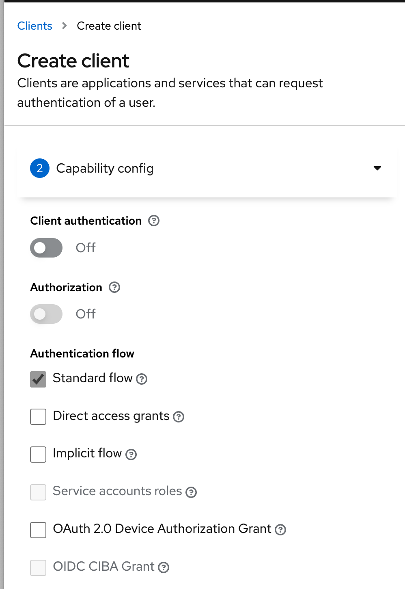
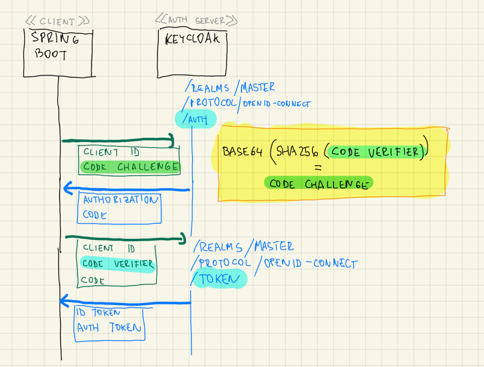
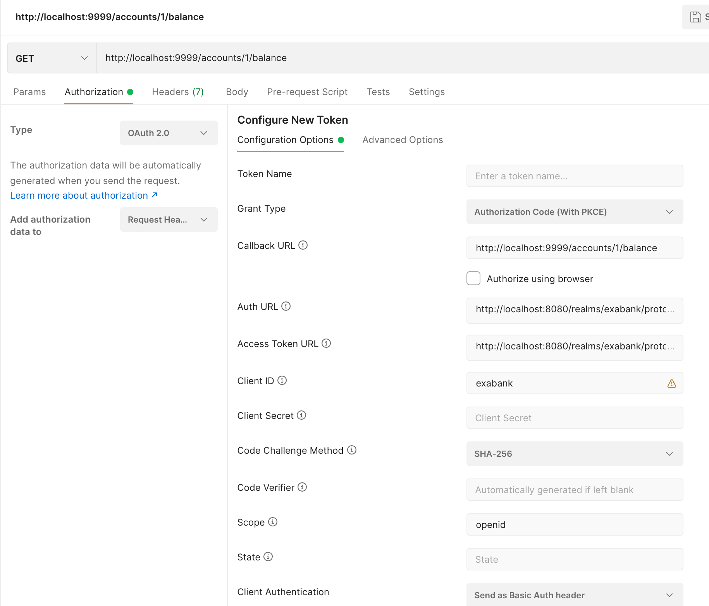

Ukážeme si, ako zabezpečiť springovú backendovú webovú aplikáciu pomocou OAuth 2.0 a OpenID Connect, kde klientom je aplikácia s otvoreným kódom — frontend typu SPA alebo mobilná appka.
Ak používame OAuth 2.0/OIDC 1.0 a:
-
klient obsahuje otvorený zdrojový kód — napríklad JavaScript vo webovom prehliadači
-
alebo klient obsahuje hackovateľný zdrojový kód — napr. dekompilovateľná mobilná appka
... je čas na flow Authorization Code with Proof Key for Code Exchange (PKCE).
Plán práce:
-
v Keycloaku zaregistrujeme ukážkového klienta
exabanks podporou pre flow PKCE -
pripravíme Spring Boot aplikáciu s modulom OAuth 2 Client, ktorá bude spracovávať tokeny JWT s prihlásením.
-
nezávisle od toho novú Spring Boot aplikáciu s modulom OAuth 2 Resource Server, ktorá bude reprezentovať iný spôsob poskytovania dát.
Registrácia klienta v Keycloaku
V Keycloaku vytvorme nového klienta (OAuth Client).

- Client Authentication
-
ponechajme vypnutú, keďže chceme demonštrovať verejného klienta (Public Client v zmysle OAuth).
- Authentication flow
-
ponechajme len Standard Flow, čo je keycloaková terminológia pre Authorization Code.
V ďalšom kroku sprievodcu doplníme:
- Root URL
-
http://localhost:9999, keďže tam pobeží naša aplikácia.
Klient je teda pripravený.
| Na rozdiel od štandardného flowu Authorization Code, kde zdrojový kód je na serveri a klient si s autentifikačným serverom (Keycloak) vymieňa tajomstvo Client Secret, tuto sa na to nemôžeme spoliehať. Client Secret by tak mohol niekto ukradnúť zo zdrojového kódu, čím by sa stal vektorom útoku. |
Tvorba klienta v Spring Boote
Pripravme klienta v Spring Boote.
Cez Spring Initializer vytvorme klienta so štartérmi pre
-
Spring OAuth 2 Client
-
Spring Web
Do src/main/resources/static dodajme nejakú statickú stránku index.html, na ktorej sa ocitneme po úspešnom prihlásení.
Do application.properties dodajme konfiguráciu:
server.port=9999 (1)
spring.security.oauth2.client.registration.keycloak.client-id=exabank
spring.security.oauth2.client.registration.keycloak.scope=openid
spring.security.oauth2.client.registration.keycloak.client-authentication-method=none (2)
spring.security.oauth2.client.provider.keycloak.issuer-uri=http://localhost:8080/realms/master
logging.level.sun.net.www.protocol.http.HttpURLConnection=DEBUG (3)
logging.level.org.springframework.web.client.RestTemplate=DEBUG
logging.level.org.springframework.security=DEBUG| 1 | Webovú aplikáciu budeme spúšťať na porte 9999. |
| 2 | Nakonfigurujme klienta. Ak nepoužívame „žiadnu“ autentifikačnú metódu klienta, ide o verejného klienta, pri ktorom Spring Security zapne podporu PKCE. |
| 3 | Nastavíme logovanie. |
Aplikáciu spusťme! Navštívme jej URL: http://localhost:9999/index.html.
Backend nás rovno presmeruje na prihlasovací formulár Keycloaku.
Po vyplnení údajov sa ocitneme na úvodnej stránke index.html.
Interakcia medzi klientom a Keycloakom
Ak si pozrieme logy Spring Bootu, uvidíme zapnutie PKCE.
Redirecting to http://localhost:8080/realms/master/protocol/openid-connect/auth?response_type=code&client_id=exabank&scope=openid&state=u0W-_351UDxvhi9H-TXKQnBotcgYAJwCqDZIgEKwX-c%3D&redirect_uri=http://localhost:9999/login/oauth2/code/keycloak&nonce=S0DilI5RQ5G4egozrYaGgxNqc6F1qvCJEKPxB1Ac98Y&code_challenge=YRyN1lEilHOZM5vyxnjbf6y3lKauBEFqa19jmfCtiqg&code_challenge_method=S256
Ak si to rozoberieme, tak Spring presmeroval prehliadač na autorizačný endpoint v Keycloaku:
http://localhost:8080/realms/master/protocol/openid-connect/auth?
response_type=code
&client_id=exabank
&scope=openid
&state=u0W-_351UDxvhi9H-TXKQnBotcgYAJwCqDZIgEKwX-c%3D
&redirect_uri=http://localhost:9999/login/oauth2/code/keycloak
&nonce=S0DilI5RQ5G4egozrYaGgxNqc6F1qvCJEKPxB1Ac98Y
&code_challenge=YRyN1lEilHOZM5vyxnjbf6y3lKauBEFqa19jmfCtiqg (1)
&code_challenge_method=S256 (2)| 1 | Prehliadač posiela na autentifikačný endpoint tzv. code challenge, čo je zahešovaná verzia špeciálneho kódu vygenerovaného klientom. |
| 2 | Na hešovanie sa používa algoritmus SHA256. |
Keycloak (na porte 8080) autorizuje používateľa a zapamäta si heš k príslušne session.
V súlade s flowom Authentication Code si používateľ vymenil svoj login a heslo za autorizačný kód (Authorization Code).
Prakticky v nasledovnej výmene zoberie klient (Spring Boot):
-
autorizačný kód (authorization code)
-
verifikátor kódu (code verifier)
a získa na výmenou sadu tokenov: zväčša identifikačný token (ID token) a autentifikačný token (Authentication Token).
V logu uvidíme:
2023-03-29T21:03:38.182+02:00 DEBUG 79846 --- [nio-9999-exec-3] o.s.web.client.RestTemplate : Writing [{grant_type=[authorization_code], code=[1e65897eb], redirect_uri=[http://localhost:9999/login/oauth2/code/keycloak], client_id=[exabank], code_verifier=[iUOwf3wF59Agnn8OX7sh5hWEVJJFRrAyggBrVbA0JEFwPU9YsClsmarNc-fpFmxxK_54YEQwvvdLguTVAj8-QlV3UdYou940dIltjegAXsVXZZiEiawOXlNcxfuZ2bHC]}] as "application/x-www-form-urlencoded;charset=UTF-8"Ak si to rozoberieme, tak do endpointu http://localhost:8080/realms/master/protocol/openid-connect/token pošleme cez HTTP POST nasledovné dvojice parametrov:
grant_type=authorization_code (1)
&code=1e65897eb (2)
&code_verifier=iUOwf3wF59Agnn8OX7sh5hWEVJJFRrAyggBrVbA0JEFwPU9YsClsmarNc-fpFmxxK_54YEQwvvdLguTVAj8-QlV3UdYou940dIltjegAXsVXZZiEiawOXlNcxfuZ2bHC (3)
&redirect_uri=[http://localhost:9999/login/oauth2/code/keycloak
&client_id=exabank| 1 | Posielame autorizačný kód. |
| 2 | Obsah príslušného autorizačného kódu. |
| 3 | Verifikátor kódu. Keycloak vezme tento reťazec, vytvorí heš, následne naň použije Base64 a overí, či sa zhoduje s hodnotou code challenge z predošlej výmeny. |
| PKCE a dvojica code verifier (verifikátor kódu) s code challenge (výzva) je prakticky náhrada klientskych tajomstiev. |
Zjednodušený flow je na nasledovnom obrázku:
]
Resource Server a flow s PKCE
Vytvorme serverovú aplikáciu, ktorá bude figurovať v role OAuth 2.0 Resource Server, čiže bude obsahovať napr. REST API vyžadujúce prihláseného používateľa.
Inicializácia aplikácie
S pomocou Spring Initializr vytvorme aplikáciu, ktorá využíva nasledovné štartéry:
-
Web (
org.springframework.boot:spring-boot-starter-web) -
OAuth Resource Server (
spring-boot-starter-oauth2-resource-server)
REST API kontrolér
V aplikácii vytvorme kontrolér pre REST API:
@SpringBootApplication
@RestController (1)
public class BankApplication {
public static final Logger logger = LoggerFactory.getLogger(BankApplication.class);
@GetMapping("/accounts/{accountId}/balance")
public BigDecimal getBalance(@PathVariable String accountId, @AuthenticationPrincipal Jwt token) { (2)
logger.info("Getting balance on {} (token: {})", accountId, token);
return BigDecimal.TEN;
}
public static void main(String[] args) {
SpringApplication.run(BankApplication.class, args);
}
}| 1 | Aplikácia je zároveň kontrolérom pre REST. |
| 2 | Metóda získa stav účtu a získa prístup k tokenu JWT po prihlásení. |
Integrácia s Keycloakom
Integrácia s Keycloakom je podobná ako v prvom dieli — stačí pridať adresu URL ku Keycloaku.
application.properties
spring.security.oauth2.resourceserver.jwt.issuer-uri=http://localhost:8080/realms/masterPo spustení dokáže tento resource server prijímať tokeny JWT a poskytovať autorizované údaje.
Odskúšanie flowu
Na odskúšanie flowu už potrebujeme nejaký lepší nástroj — napríklad Postman.

-
Uvedieme adresu http://localhost:9999/accounts/1/balance, ku ktorej chceme pristúpiť na resource serveri.
-
Na karte Authorization prispôsobíme autorizačné nastavenia.
-
Vyberieme typ OAuth 2.0.
-
Grant Type reprezentuje používaný flow — vyberáme Authorization Code (With PKCE).
-
Adresa Callback URL reprezentuje adresu, kam sa prehliadač presmeruje po úspešnom prihlásení. Táto adresa musí zodpovedať nastaveniam v Keycloaku (Root URL a Valid Redirect URIs v nastaveniach klienta v administrátorskej konzole.)
-
Auth URL: obsahuje cestu k autorizačnému endpointu v Keycloaku.
-
Access Token URL je cesta k endpointu, ktorý vymení autorizačný kód a verifikátor kódu za tokeny JWT.
-
Ďalej nastavme Client ID: teda identifikátor klienta v autorizačnom serveri.
-
Client Secret ponechávame prázdne, keďže v tomto flowe sa nepoužíva.
-
Code Challenge Method je algoritmus, ktorým sa vytvára heš z verifikátora kódu, čo povedie ku reťazcu code challenge.
-
Code Verifier ponecháme prázdny, keďže si ho Postman ako klient vytvorí náhodne sám.
-
Scope je
openid, aby sme sa riadili špecifikáciou OpenID Connect 1.0. -
State nebudeme používať.
-
Client Authentication ponecháme bez zmeny. Keďže v tomto flowe sa nepoužíva, je to irelevantné.
Cez tlačidlo Get Access Token začne celý flow.
Najprv sa zobrazí prihlasovací formulár Keycloaku, kde vyplňme login a heslo. Po úspešnom prihlásení získame token, ktorý môžeme použiť (Use Token) a následne už volať REST API štandardným spôsobom.